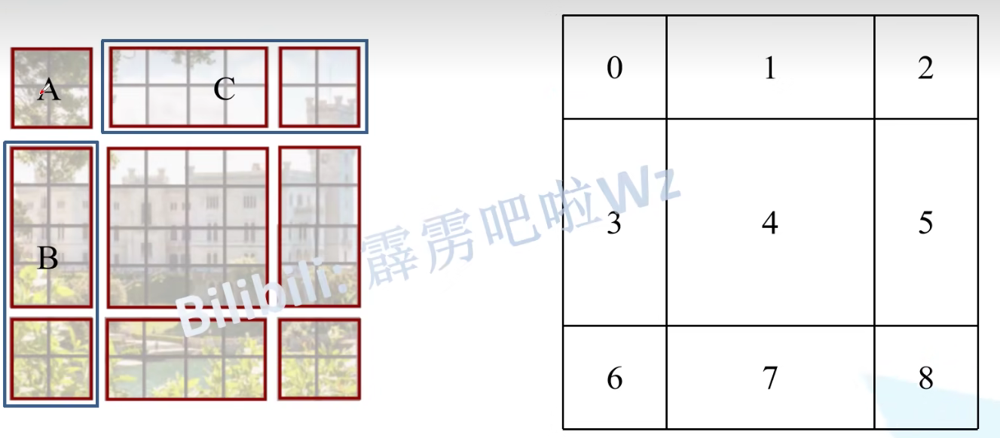

本篇博客主要分享鸽砸对Swin-Transformer网络的学习笔记，内容摘自b站博主霹雳吧啦Wz，更详细的内容推荐大家去看博主的视频与CSDN博客。
Swin-Transformer论文：Swin Transformer: Hierarchical Vision Transformer using Shifted Windows
Swin-Transformer网络结构
Swin-Transformer网络结构如下图所示。从图可以看出，Swin-Transformer主要由这几个模块组成：Patch Partition、Linear Embedding、Patch Merging、Swin Transformer Block。

上图展示的是标准的Swin-Transformer，图像再经过网络后，会被下采样32倍，通道数变为4C，可以在后面添加一个全局平均池化和全连接头进行分类任务；也可以融合不同层的输出，进行目标检测、实例分割等任务。
Patch Partition、Linear Embedding
在代码中，Patch Partition和Linear Embedding步骤是在一个类中实现的，因此我们放在一起讲。它们的处理流程如下图所示。在Patch Partition阶段，将图像按照4x4的大小切分为图像块，在通道方向上将图像块进行拼接。以HxWx3的输入图像为例，经过Patch Partition后图像大小变为H/4xW/4x48。
在Linear Embedding阶段，经过LayerNorm和线性层，将图像的通道数变为C。

在代码中，Patch Partition和Linear Embedding融合在了一起。使用卷积核大小4x4、步长为4、输出通道数为96的卷积层和LayerNorm层即实现了对图像的处理。部分代码如下所示。
1 | class PatchEmbed(nn.Module): |
Patch Merging
Patch Merging的作用是实现特征图的下采样。它的处理流程如下图所示。从下图可以看出，Patch Merging先将图像进行切片，分成了四个部分，将四个部分在通道方向上进行拼接。对于HxWxC的输入特征图，拼接后的图像大小为H/2xW/2x4C。随后再将特征图通过LayerNorm与线性层，将通道数从4C减小为2C。在思想上，Patch Merging与YOLOv5的Focus模块很类似。
在代码中，Patch Merging的实现方法如下图所示。
1 | class PatchMerging(nn.Module): |
Swin Transformer Block
Swin Transformer Block是Swin Transformer的灵魂，它的网络结构如下图所示。下图实际上是两个Swin Transformer Block。
从上图可以看出，特征图进入到Swin Transformer Block后，首先经过一个LayerNorm层，然后根据情况进入W-MSA/SW-MSA模块，随后经过LayerNorm和MLP模块，其中存在网络的跳连接。我们在下面分别介绍各个模块的内容。
MLP
MLP模块的网络结构如下图所示。从下图可以看出，图像输入到MLP模块后，首先经过线性层，将通道数变为原来的4倍，然后依次经过GELU激活函数与Dropout，第二个线性层将通道数恢复到输入通道数，经过Dropout层后输出。

MLP模块的实现代码如下所示。
1 | class Mlp(nn.Module): |
W-MSA
在Swin Transformer中，执行注意力机制时并不是图像中的所有像素（Patch）都要进行注意力的计算，作者将图像划分为一个个小的窗口（window），然后窗口内的像素进行注意力机制计算，而窗口之间是没有信息交互的。如下图所示，图像按照2x2的window大小被切分成了4个窗口，随后4个窗口内部进行独立的注意力机制计算。这么做的好处是可以大大减小参数量与计算量。
正如W-MSA的全程window-multiple self attention，模型以窗口为单位，进行注意力的计算，但这又会引出一个问题，那就是窗口之间没有信息的交互，模型的效果不好，因此，在Swin Transformer Block中，又引入了SW-MSA模块。
SW-MSA
SW-MSA全称shift window-multiple self attention，在W-MSA模块的基础上引入了窗口转移机制，如下图所示。Layer i表示的是W-MSA模块处理阶段，图像被切分成了4个window；Layer i+1表示SW-MSA模块处理阶段，可以看出，窗口的大小、数量都发生了变化，通过SW-MSA模块，实现了不同窗口之间的信息交互。
但我们从上图可以看出，SW-MSA的窗口大小不是一致的，这样会导致模型无法并行化进行，因为不同窗口的注意力计算方式不同，为了解决这个问题，作者提出了一种转换方法，通过调整，可以使SW-MSA模块能够像W-MSA模块一样在固定大小的窗口中计算注意力。转换方法如下所示。首先对切分的窗口进行编号，然后将图像中的一些窗口进行编号，从下图可看出窗口的组合被标记为了A、B、C。
随后将A、C组合移动到图像的最下方。
最后将A、B模块移动到图像的最右侧，这样就完成了转换，在计算注意力时，编号4可以独自进行计算；编号5、3组合进行计算；编号7、1组合进行计算；编号8、6、2、0组合进行计算，这样就实现了在SW-MSA模块中保持各窗口大小一致，可进行注意力计算了。
但是，我们可以发现一个问题，以编号5、3的组合窗口为例，实际上窗口5和窗口3之间不是连续的，计算它们之间的注意力没有任何价值，我们希望的是窗口5内部进行注意力计算、窗口3内部进行注意力计算。因此，作者提出了一种mask矩阵，用来去除那些没有意义的注意力计算权重，方法如下图所示。

以区域5和区域3组成的窗口为例，作者将没有价值的权重，如a02、a03减去一个常数100，这样在计算softmax权重时，它们的结果就会是0，这就可以实现窗口内部的注意力机制计算了。
其他技巧
Relative Position Bias
在进行多头注意力计算时，作者在Q、K相乘之后，加上了一个Relative Position Bias，如下图所示。B表示的就是相对位置偏置，这个偏置的值是通过网络学习得到的，作者将其称之为Relative Position Bias Table，它的大小为（2M-1）x（2M-1），M表示的是图像的长/宽大小。

每个像素（patch）对应的Relative Position Bias值需要通过自己的Relative Position Index得到，Index的计算方法通过图像的绝对位置和相对位置综合计算得到。
实验
对比试验
我们最后看看作者做的实验~下图a是在ImageNet-1K数据集上对模型进行训练，然后查看模型的分类性能。可以发现Swin-B（Base）的性能优于其他模型。图b是在ImageNet-22K数据集上对模型进行训练，可以发现Swin-B的性能也是最好的。
移动窗口与相对位置编码实验
作者比较了在注意力计算中添加不同形式的位置编码，如下图所示。可以发现，添加移动窗口，即SW-MSA时，效果最好；在注意力计算中加入相对位置编码（relative positon bias）时，效果最好。

总结
Swin-Transformer在CV领域的地位很高，很有学习价值！